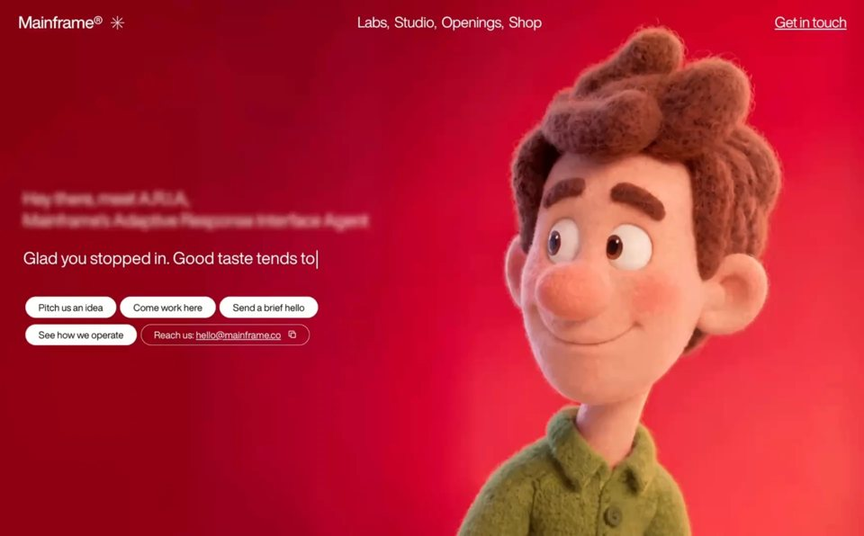

3D Character Studio
3D3dyilai-ai 公开页面
收录时间：2026-08-28正文：5,800 字符

本地预览图 · jpeg
完整提示词
Build a full-screen hero landing page for a creative agency called "Mainframe" using React, TypeScript, Vite, and Tailwind CSS. Here is every detail:
---
FONTS
Load two fonts in `index.html` via these stylesheet links:
- Heading: `https://db.onlinewebfonts.com/c/5ac3fe7c6abd2f62067f266d89671492?family=HelveticaNowDisplay-Medium`
- Body: `https://db.onlinewebfonts.com/c/1aa3377e489837a26d019bba501e779d?family=HelveticaNowDisplayW01-Rg`
In `index.css`, define CSS variables:
```css
:root {
--font-heading: 'HelveticaNowDisplay-Medium', 'Helvetica Neue', Arial, sans-serif;
--font-body: 'HelveticaNowDisplayW01-Rg', 'Helvetica Neue', Arial, sans-serif;
}
body {
font-family: var(--font-body);
}
```
The entire page uses `var(--font-body)` except the logo text which uses `var(--font-heading)`.
---
BACKGROUND VIDEO (mouse-scrub controlled)
- A full-screen `<video>` element is `position: fixed; inset: 0; z-index: 0; object-fit: cover; object-position: 70% center;`.
- Video source URL: `https://d8j0ntlcm91z4.cloudfront.net/user_38xzZboKViGWJOttwIXH07lWA1P/hf_20260826_041744_63efcd78-bf7d-4039-99e2-2461e8a61903.mp4`
- The video is `muted`, `playsInline`, `preload="auto"`. It does NOT autoplay.
- The video scrubs forward/backward based on horizontal mouse movement. Use a `mousemove` event listener on `window`. Track `prevX`, compute `delta = currentX - prevX`, convert to a time offset: `(delta / window.innerWidth) * SENSITIVITY * video.duration` where `SENSITIVITY = 0.8`. Clamp `targetTime` between 0 and `video.duration`. Use `video.currentTime` to seek, and an `onSeeked` handler to queue the next seek if `targetTime` has moved, preventing seek-flooding.
---
**NAVBAR (fixed, z-index: 10)**
- Fixed to top, full width. Padding: `px-5 sm:px-8 py-4 sm:py-5`. Flex row, `justify-between`, `items-center`.
- **Logo (left):** Flex row with `gap-3`. Text "Mainframe(R)" (use the registered trademark symbol) at `text-[21px] sm:text-[26px]`, `tracking-tight`, white, using `var(--font-heading)`. Beside it, a decorative asterisk character `✳︎` at `text-[25px] sm:text-[30px]`, white, `select-none`, `letter-spacing: -0.02em`.
- **Desktop nav links (center, hidden below md):** Flex row, `text-[23px]`, white. Links: "Labs", "Studio", "Openings", "Shop" separated by commas rendered as `, `. Each link has `hover:opacity-60 transition-opacity`.
- **Desktop CTA (right, hidden below md):** An anchor "Get in touch" at `text-[23px]`, white, `underline underline-offset-2`, `hover:opacity-60 transition-opacity`.
- **Mobile hamburger (visible below md):** A button with 3 horizontal bars (each `w-6 h-[2px] bg-white`), spaced with `gap-[5px]`. On toggle, the top bar rotates 45deg and translates down 7px, middle bar fades to opacity 0, bottom bar rotates -45deg and translates up 7px. All transitions are `duration-300`.
- **Mobile overlay (z-index: 9):** `fixed inset-0 bg-black/90 backdrop-blur-md`, flex column, vertically centered, left-aligned with `px-8 gap-8`. Same links at `text-[32px] font-medium`, plus "Get in touch" underlined. Fades in/out with `opacity` and `pointerEvents` toggled. Hidden on md+.
---
**HERO SECTION (z-index: 1)**
- Full `h-screen`, flex column. On mobile: `justify-end pb-12`. On `md:`: `justify-center pb-0`. Horizontal padding: `px-5 sm:px-8 md:px-10`. `overflow-hidden`.
- Content container: `max-w-xl`, `relative z-10`.
**1. Blurred intro label:**
- `pointer-events-none`, `select-none`, `mb-5 sm:mb-6`.
- Font size: `clamp(18px, 4vw, 26px)`, `line-height: 1.3`, `font-weight: 400`, `color: #fff`, `filter: blur(4px)`.
- Two lines of text:
- Line 1: "Hey there, meet A.R.I.A,"
- Line 2: "Mainframe's Adaptive Response Interface Agent"
- Separated by a `<br>`.
**2. Typewriter text:**
- Text: `"Glad you stopped in. Good taste tends to find us. Now, what are we building?"`
- Custom `useTypewriter` hook: takes `text`, `speed` (default 38ms per character), `startDelay` (default 600ms). After the delay, an interval reveals one character at a time. Returns `{ displayed, done }`.
- Rendered in a `<p>` tag, white, `mb-5 sm:mb-6`, font size `clamp(18px, 4vw, 26px)`, `line-height: 1.35`, `font-weight: 400`, `min-height: 54px`.
- While typing, show a blinking cursor: `inline-block w-[2px] h-[1.1em] bg-white align-middle ml-[2px]` with CSS animation `blink 1s step-end infinite` (`opacity: 1 at 0%/100%, 0 at 50%`). Cursor disappears when `done` is true.
**3. Action pill buttons:**
- Appear with a fade-in + slide-up animation (`opacity 0->1`, `translateY(8px)->0`, `transition: opacity 0.4s ease, transform 0.4s ease`). They become visible 400ms after page load, independent of the typewriter animation (do NOT wait for typing to finish).
- Container: `flex flex-wrap gap-y-1`.
- **4 white pill buttons:** Labels: "Pitch us an idea", "Come work here", "Send a brief hello", "See how we operate". Each is `inline-flex items-center justify-center bg-white text-black border border-black/10 rounded-full text-[13px] sm:text-[15px] px-4 sm:px-5 py-[0.3em] mx-[0.2em] mb-[0.4em] white-space: nowrap`. Hover: `bg-black text-white`, `transition-colors duration-200`.
- **1 outline pill button:** Text "Reach us: hello@mainframe.co" (email is underlined with `underline-offset-1`), followed by a small 12x12 copy icon (inline SVG of two overlapping rectangles). Styled: `text-white bg-transparent border border-white rounded-full`, same sizing as above, with `gap-2 sm:gap-3` between text and icon. Hover: `bg-white text-black`. On click, copies "hello@mainframe.co" to clipboard via `navigator.clipboard.writeText()`.
---
DEPENDENCIES
Only React, ReactDOM, Tailwind CSS, and Vite. No other UI libraries. Lucide-react is available but not used in this component.把上面的提示词完整复制到支持长文本的 AI 工具中，再按需要替换品牌名、配色与文案。提示词描述的是整页结构与动效节奏，生成后建议在真实浏览器里检查首屏加载和移动端表现。
来源与版权
该条目来自公开提示词页面，原始出处信息未随页面提供。
提示词文本与预览素材的版权归原作者或原平台所有，本站仅作索引与归档。若你是权利人并希望移除本条内容，请通过联系方式告知。